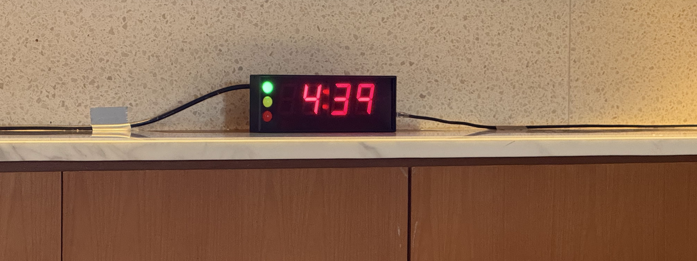
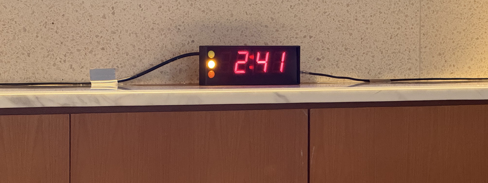

How to survive from chairing a conference session
From panic to enjoy: a beginner’s survival guide
![]()
When panic hit me
This was just the third conference I’d ever attended, and since I’d always been a diligent listener at the previous ones (as most of us are, I bet), I hadn’t really thought much about what it takes to chair a session. My first chairing session was scheduled for the afternoon of 6th November 2024 (I’m sharing this story and putting the date here for a future ceremony), so I had one morning to figure out how to do it. I decided to attend the “Vaccine-Preventable Diseases” session chaired by Prof. Mark Jit for two reasons: (i) I work on vaccine-preventable diseases, and (ii) I like his speaking style.
Looking back, I’d highly recommend that whenever you attend a conference, take a moment to observe how people chair sessions. You might discover a role model or a style that suits you. It’s a simple step that can make a big difference when your turn comes.
Now, let’s dive into how you will survive.
Getting ready
Make sure you’re in the room perhaps 15 minutes before the session starts. As soon as you step into the room, find the organizing team. Let them know you are the chairperson and ask them if they’ve received all the slides. If any slide is missing, it’s likely a sign of trouble with that speaker, and you’ll need to follow up.
Next, let the organizers know how you plan to do your job. Most conferences provide a timer. It counts down from a specific time and looks like this:

The timer has a traffic light system: green means “all good,” yellow signals “wrap it up now,” and red screams “time’s up!”. Yes, it’s up to you to decide when should it change color.

Let’s say you have a 90-minute session with four talks. That means each talk gets a maximum of 22 minutes. It’s very likely that the speakers have been told in advance to aim for 18 minutes of presentation time, so you can ask the organizers to set the timer for 18 minutes, and then reset it to count down from 4 minutes for Q&A. For those who like a more relaxed vibe, you might set the timer for the full 22 minutes. It’s really up to you and your style.
On your table, you’ll find a paper listing the speakers’ names, their institutions, and their talk titles. Sorry I forgot to take a photo of this paper. If your session starts a little late, note down the actual start time, because you may want to ensure that your session still lasts for 90 minutes to be fair for both the speakers and the audience.
Now it’s time to say hi to your speakers. Introduce yourself, and ask how to pronounce their name and institution correctly. Let them know how you’ve set the timer. If they can see it, great. If not, explain what signal you’ll use when their time is almost up. Show them where to sit, the path to the stage, and help them adjust the microphone height if needed. Finally, let them check their slides to make sure everything is in order.
Start the show
Remind yourself that the session’s focus is on the speakers, NOT you. There’s no need to stress too much.
When it’s time to begin, welcome everyone to the session and introduce the topic. A simple formula could be:
Welcome everyone, thanks so much for joining this session on XXX. This is a topic I’m really interested in, and I hope you will enjoy it too. We’ve got YYY talks, each one is 18 minutes, followed by 4 minutes for Q&A. I’ll be very strict with the time, so please don’t go overtime (say this with a smile or it might sound scary). Now let’s get started with our first speaker.
When introducing speakers, my tip is just mention their name and institution, leaving the talk title for them to announce. Here’s why:
- Most speakers will have their talk title on their first slide and have practiced at introducing it themselves.
- Some speakers may have updated their talk title. If you read out the old title, you’ll waste some precious time correcting it.
Now, sit back (but stay alert) and let the first speaker take the stage.
Q&A
When the speaker finish their talk, open the floor for questions from the audience. A simple way to do this could be:
Thank you, ZZZ for a wonderful/great/interesting talk. Now we have 4 minutes for questions. If anyone has a question, please raise your hand, and I’ll bring the microphone to you.
If there’s a stationary microphone set up for the audience, you could say:
If you have a question, please go ahead and use the microphone over there.
If the audience is excited and asks a lot of questions, you know you’re safe. Honestly, once you’ve got two or three questions (which is plural) and the time isn’t up yet, you can still smoothly transition to the next speaker. But if there’s a quiet room with no questions at first, you need to ask something yourself to get things moving. Having a prepared question for each talk is a lifesaver. And remember, your job is to keep the atmosphere friendly and inclusive.
I noticed that some audience members are super active with questions, while others may never speak up. The ones asking all the questions are your lifesavers - they make your job so much easier. They’re usually the friendly extroverts, so feel free to chat with them after the session.
Wrap-up and chill
By now, your session has hopefully stayed within the 90 +- 5 minutes mark. It’s time to thank the speakers and audience and officially wrap things up. Here’s a simple formula you can use:
Thank you and that brings us to the end of this session. Thank you to all our speakers and the audience. If you still have questions, feel free to chat with the speakers during the coffee break. Enjoy the rest of the conference!
Dealing with unexpected problems
Even with all your preparation, things can (and will) go wrong.
- A missing speaker
- Overtime speakers
- Tech failure
Fortunately, I didn’t face any of these problems in my sessions. But this also means I don’t have direct experience with them yet. I’ll update this section once I do!
That’s all!
It’s definitely not as difficult as I imagined before. Now that I’ve survived, I’m ready to take on more sessions with way more confidence (and hopefully less panic). I hope this guide helps make your first time a little less overwhelming and a lot more fun than mine was. Good luck!
Acknowledgements
I would like to thank MIDSEA and IDM conference for giving me the opportunity to chair a session for the first time. A special thanks to Prof. Mark Jit for the invaluable advice, much of which has been incorporated into this guide.